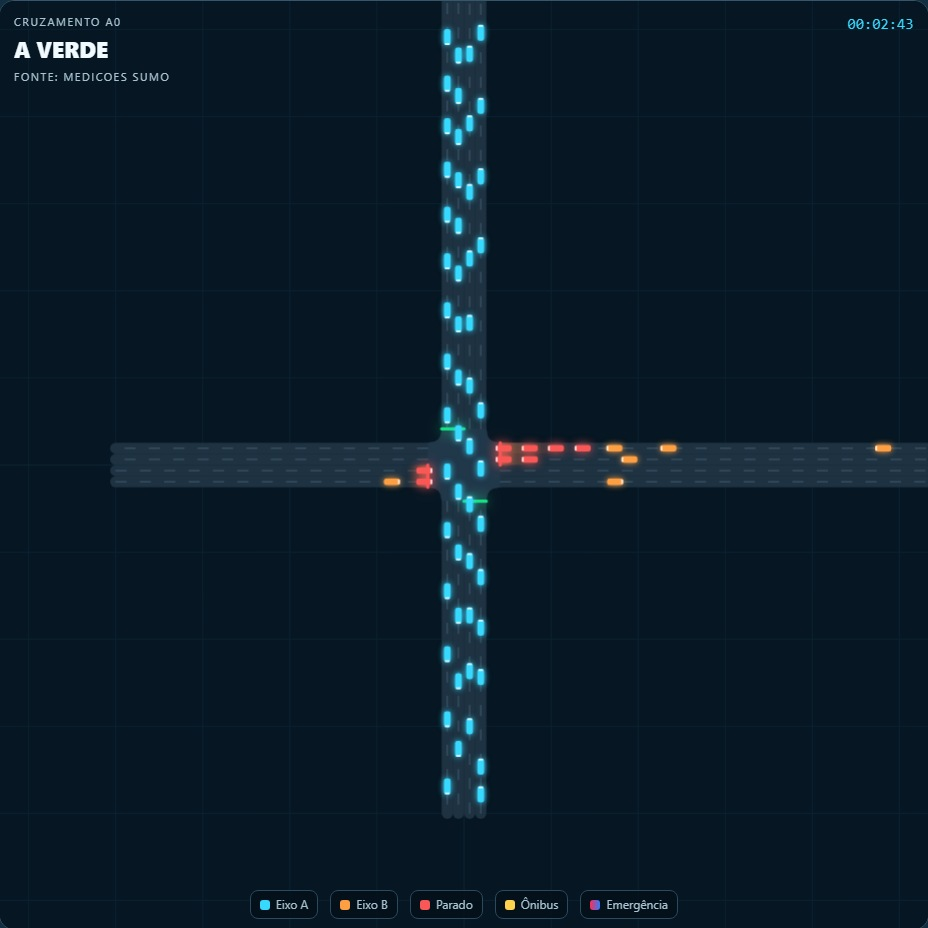
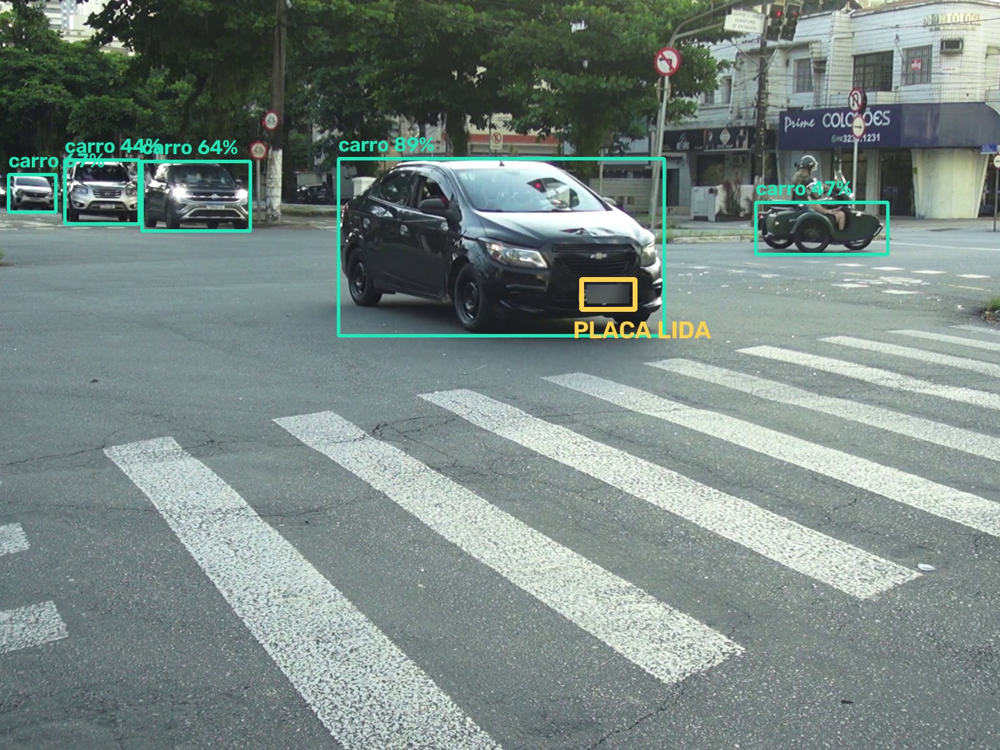

O projeto em poucos minutos
O tempo perdido no semáforo
Um semáforo de tempo fixo repete o mesmo ciclo com a rua cheia ou vazia. Motoristas esperam diante de vias sem movimento, as filas crescem nos horários de pico e veículos de emergência perdem tempo nos cruzamentos.
Como o SINALYX funciona
1. Enxerga
Uma câmera por direção detecta veículos com YOLO e mede a fila na área marcada da via.
2. Compara
As câmeras somam a demanda de cada eixo do cruzamento. Veículos parados e ônibus têm peso maior.
3. Decide
O verde muda quando o outro eixo passa a precisar mais, sempre com verde mínimo, máximo e amarelo.
4. Coordena
A central abre corredores de emergência e ondas verdes entre vários cruzamentos.


Gêmeo digital na simulação SUMO e detecção de veículos em vídeo real. A placa foi desfocada para proteger dados pessoais.
O que a plataforma faz
Central de operações
Cruzamentos, câmeras, mapa, usuários e diagnóstico em um só lugar.
Várias câmeras por cruzamento
Uma imagem por direção e um ranking de qual lado tem mais carros.
Corredor de emergência
Semáforos do trajeto abrem em sequência para a ambulância passar.
Onda verde
Cada semáforo abre no tempo que o veículo leva para chegar até ele.
Leitura de placas
Localiza em que câmera e em que momento uma placa foi lida.
Comparação ao vivo
Mede o ganho contra uma simulação idêntica com tempo fixo.
SINALYX x tempo fixo
Duas simulações SUMO rodaram em paralelo com a mesma demanda: uma com o SINALYX e outra com o plano de tempo fixo.
| Indicador | Tempo fixo | SINALYX |
|---|---|---|
| Tempo parado em 6 cruzamentos, em 30 min simulados (tráfego moderado) | 236,9 min | 64,7 min |
| Ambulância em corredor crítico | 146 s | 56 s |
| Pelotão em onda verde (5 semáforos) | 105 s | 68 s |
| Paradas por veículo na onda verde | 1,0 | 0 |
Como o projeto foi construído
Detecção de veículos
Contagem por visão computacional com YOLO em vídeos de trânsito.
Controle adaptativo
Lógica de decisão ligada ao simulador SUMO por TraCI.
Central web
Cadastro de cruzamentos, mapa, usuários e telemetria em tempo real.
Vários cruzamentos e câmeras
Controle simultâneo da rede e uma câmera por direção com decisão conjunta.
Emergência e coordenação
Corredor de emergência, onda verde e comparação com tempo fixo.
Leitura de placas e apresentação
Rastreio por placa, zonas de contagem e modo de demonstração.
Detalhes técnicos
Regra de decisão
A prioridade de cada eixo é P = V + 2F + 3O, em que V é o número de veículos, F os parados na fila e O os ônibus. Depois de 10 s de verde, o sinal troca se a prioridade do outro eixo for mais de 1,2 vez a do eixo atual. O verde dura no máximo 45 s e o amarelo 3 s.
Tecnologias
- Python e Flask na central web
- YOLO e OpenCV na detecção de veículos
- fast-alpr na leitura de placas
- Eclipse SUMO e TraCI na simulação urbana
- SQLite no armazenamento e Leaflet com OpenStreetMap no mapa
Arquitetura
A central web recebe as imagens e mostra o estado da rede. Um controlador separado conversa com o SUMO, decide as fases de cada semáforo e publica a telemetria. Uma segunda simulação, com tempo fixo, serve de base de comparação.
Limitações e privacidade
Os resultados são de simulação. Uma implantação real exigiria controladores homologados, autorização dos órgãos de trânsito e validação de engenharia. Placas são dados pessoais: as leituras têm prazo de retenção e qualquer uso real deve seguir a LGPD.
Quem fez
- Enzo Akio Koga
- Erick Lucas Oliveira
- Guilherme Cintra Doraciotto
- Lucas Torres Fernandes
- Renan Jorge Aleixo
Professor orientador: Evandro Veronez · Centro Universitário Facens
Fale com a equipe
O e-mail de contato será publicado em breve.